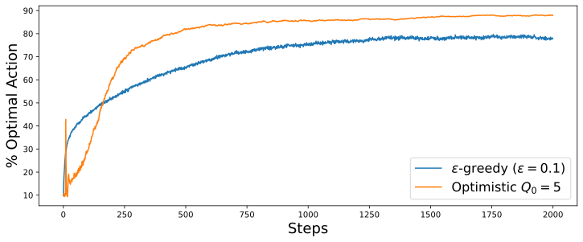

Introduction
A key limitation of epsilon-greedy methods in managing the explore-exploit trade-off becomes apparent when examining their impact on the first few actions on the k-armed bandit problem. By initialising $Q(a) = 0$, for all $a$, we are likely to underestimate the expected rewards of each action. In the initial stages of exploration, the greedy actions taken by the agent would be mostly dependent on which action the agent tried first, as the agent estimates all other actions to be significantly worse than they are, due to the initial conditions.
Optimistic exploration
Suppose that each arm in the k-armed bandit problem has an expected reward of $[0,1]$, with a variance of $1$. By initialising $Q(a)=5 \; \forall a$ , the agent would initially be “disappointed” with the rewards that it receives, prompting it to explore each action until the initial bias is decayed.

Exercise
Initial spike.
The results in Figure 1 should be quite reliable because they are averaged over 5000 individual, independent 10-armed bandit tasks. Explain the oscillations in the early part of the curve in the optimistic method, particularly at the 11th time step where the accuracy jumps to $40\%$.
Non-stationary problem.
Optimistic Initial Values do not perform as well on non-stationary problems. Suggest a reason why.
Observation.
The $\varepsilon$-greedy method seems to converge to about 77% accuracy, while the optimistic method seems to converge to 87% accuracy. Explain the main cause of the large discrepancy.
Conclusion
Optimistic Initial Values (OIVs) are a good way to force initial exploration, particularly when dealing with stationary tasks. With the general non-stationary case, “exploration frenzy” occurs only once, and is unlikely to help as the environment changes. As such, OIVs are best suited for stationary or near-stationary tasks, where the environment changes at a slow enough pace that the faster initial convergence is worth the complications that comes with implementing the initial optimistic action-values.
Appendix
Answers to Exercise questions
Initial spike.
At time step 10, the agent has tried each action exactly once. Hence, the action with the highest value would most likely be the optimal action, leading to the high accuracy on time step 11. After time step 11, the phenomenon repeats, albeit with a higher variance, which leads to less extreme spikes. This goes on until the combined noise of the increased variance and agent learning supersedes the spikes, forming a smooth, general increase.
Non-stationary problem.
As the environment changes, the initial exploration induced by OIV becomes less relevant. Eventually, the additional exploration provided by OIV would cease to assist the agent in navigating the new environment.1
Observation.
The value $\varepsilon$ is high at 0.1, causing the model to have a “built-in” 10% chance to choose a random option.
Simulation code
Simulation of 10-armed bandit problem
import numpy as np
import matplotlib.pyplot as plt
from tqdm import tqdm
import pickle
runs = 5_000
steps = 2000
k = 10
alpha = 0.1
epsilon = 0.1
def run_bandit(Q_init, epsilon):
q_true = np.random.normal(0, 1, (runs, k))
Q = np.full((runs, k), Q_init, dtype=np.float32)
optimal_arm = np.argmax(q_true, axis=1)
optimal_action = np.zeros(steps)
for t in tqdm(range(steps)):
explore = np.random.rand(runs) < epsilon
greedy_actions = np.argmax(Q, axis=1)
random_actions = np.random.randint(k, size=runs)
actions = np.where(explore, random_actions, greedy_actions)
rewards = np.random.normal(q_true[np.arange(runs), actions], 1)
Q[np.arange(runs), actions] += alpha * (
rewards - Q[np.arange(runs), actions]
)
optimal_action[t] = np.mean(actions == optimal_arm)
return optimal_action
realistic = run_bandit(Q_init=0, epsilon=0.1)
optimistic = run_bandit(Q_init=5.0, epsilon=0)
with open('realistic.pkl', 'wb') as f:
pickle.dump(realistic, f)
with open('optimistic.pkl', 'wb') as f:
pickle.dump(optimistic, f)
Plotter
import matplotlib.pyplot as plt
import pickle
with open('realistic.pkl', 'rb') as f:
realistic = pickle.load(f)
with open('optimistic.pkl', 'rb') as f:
optimistic = pickle.load(f)
print(realistic)
print(optimistic)
plt.figure(figsize=(12,4.5))
plt.xlabel("Steps", fontsize=18)
plt.ylabel("% Optimal Action", fontsize=18)
plt.plot(realistic * 100, label=r"$\epsilon$-greedy ($\epsilon=0.1$)")
plt.plot(optimistic * 100, label=r"Optimistic $Q_0=5$")
plt.legend(fontsize=16)
plt.show()
# Plot early spikes
plt.figure(figsize=(12,4.5))
plt.xlabel("Steps", fontsize=16)
plt.ylabel("% Optimal Action", fontsize=16)
plt.plot(realistic[:100] * 100, label=r"$\epsilon$-greedy ($\epsilon=0.1$)")
plt.plot(optimistic[:100] * 100, label=r"Optimistic $Q_0=5$")
plt.legend(fontsize=14)
plt.show()
-
While OIV typically leaves a decaying trace of the initial estimate in the action-values, this bias can be completely eliminated using the unbiased constant-step-size trick, where the step-size $\alpha$ is scaled by a trace $\bar{o}_n$ to ensure $Q_0$ has zero weight for all $n > 0$. ↩︎